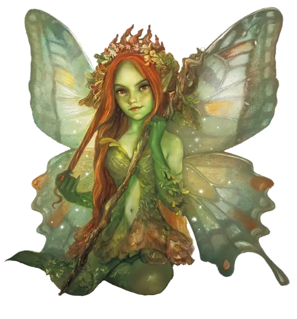

Пикси
Pixie
Крошечная Фея, Нейтральная Добрая

Класс Защиты 15 Инициатива +5 (15)
Хиты 9 (6к4 - 6)
Скорость 10 футов, Полёта 30 футов
| мод | спас | ||
|---|---|---|---|
| СИЛ | 2 | −4 | −4 |
| ЛОВ | 20 | +5 | +5 |
| ТЕЛ | 8 | −1 | −1 |
| мод | спас | ||
|---|---|---|---|
| ИНТ | 10 | +0 | +0 |
| МДР | 14 | +2 | +2 |
| ХАР | 15 | +2 | +2 |
Чувства пассивное Восприятие 14
Языки Сильван
Опасность 1/4 (50 опыта; БВ +2)
Особенности
Сопротивление магии. Пикси совершает с Преимуществом спасброски от заклинаний и прочих магических эффектов.
Действия
Пыльца феи. Бросок рукопашной или дальнобойной атаки: +4, досягаемость 5 фт. или дистанция 60 фт. Попадание: 1 урона Излучением, и цель получает состояние Очарованный или Отравленный (по выбору пикси) до конца следующего хода пикси.
Сотворение заклинаний. Пикси сотворяет одно из следующих заклинаний, не нуждаясь в Материальных компонентах (заклинательная характеристика — Харизма, Сл спасброска заклинаний 12):
Неограниченно: Искусство друидов, Невидимость, Пляшущие огоньки
1/день каждое: Обнаружение мыслей, Полёт, Усыпление
Бонус мастерства +2
Среда обитания Леса, Страна фей
Сокровища Магические
Пикси
Друзья леса
Пикси — ростом не выше тридцати сантиметров — напоминают крошечных эльфов с крылышками насекомых. Невидимые для чужих глаз, они наблюдают за теми, кто ступает в их лесные владения, и открываются лишь тем, чьи намерения мирны и доброжелательны. Те же, кто приходит с враждой в сердце, быстро становятся мишенью для проказ пикси.
Дни пикси проходят в играх, танцах и бесконечных странствиях по чащобам; они избегают прямых столкновения, когда это возможно.